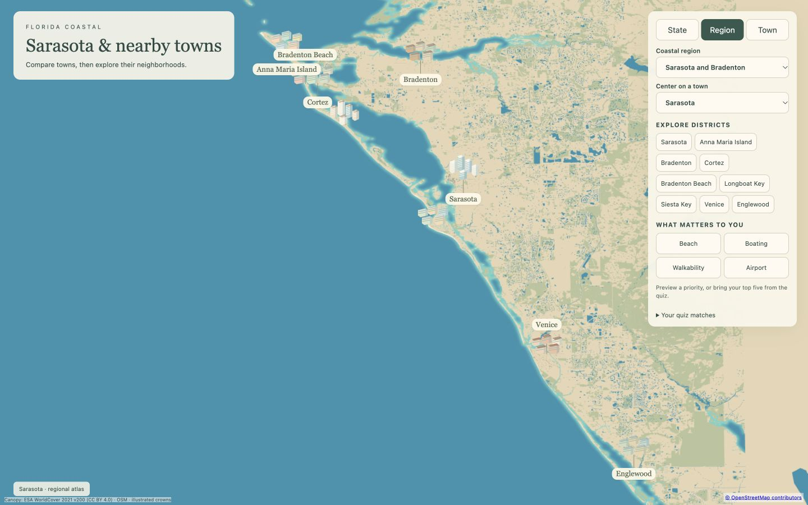
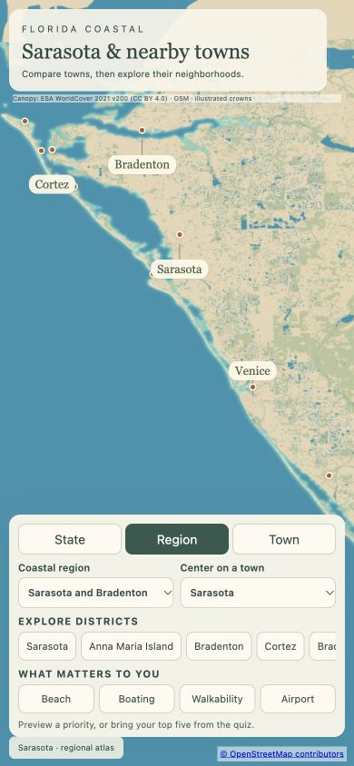
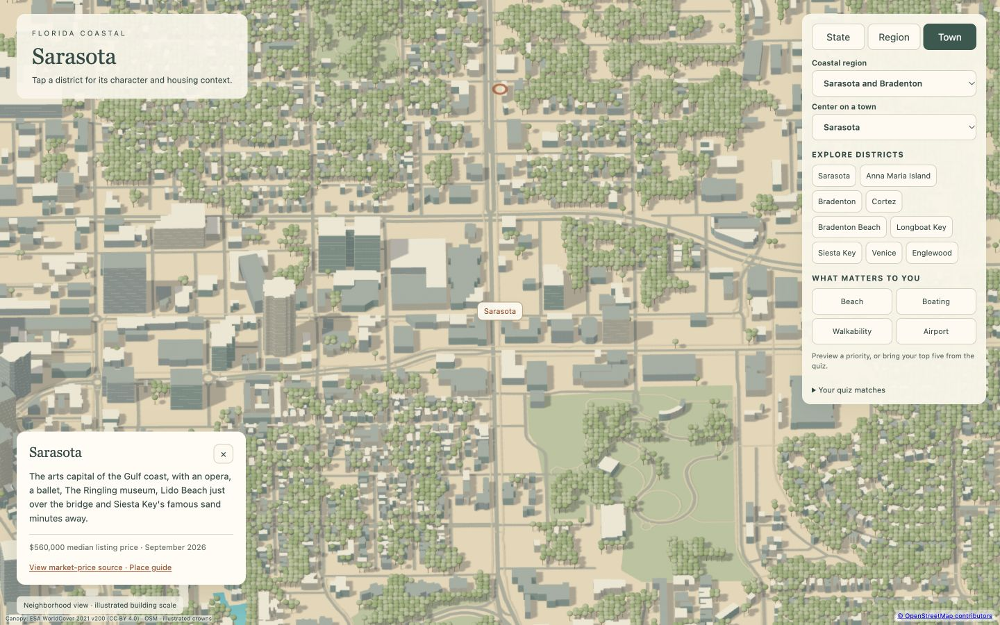
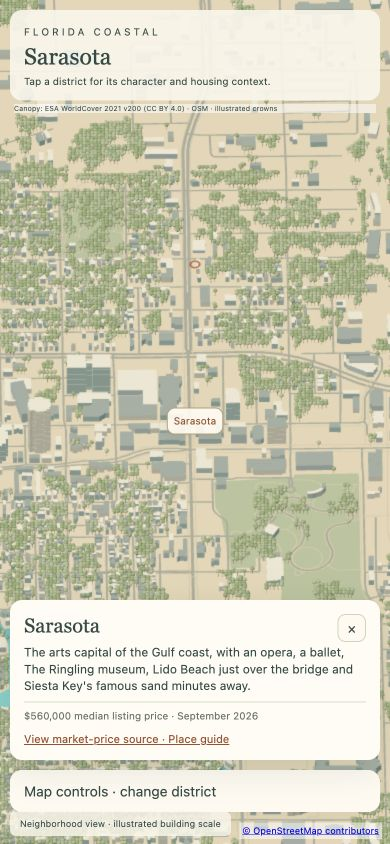
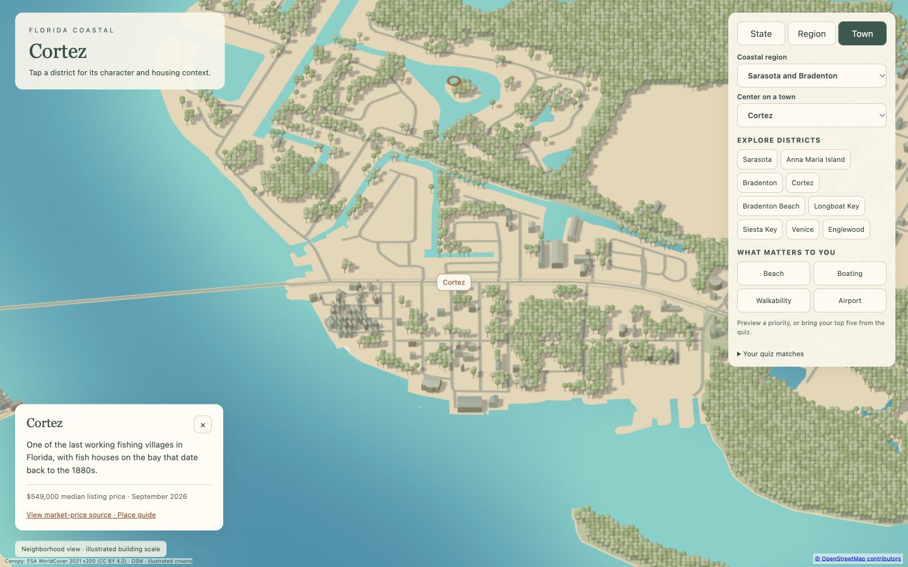
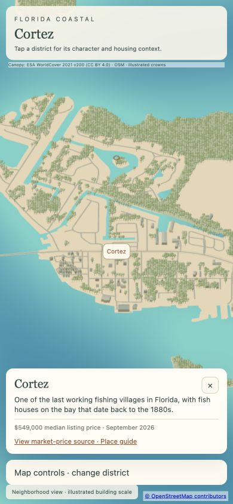
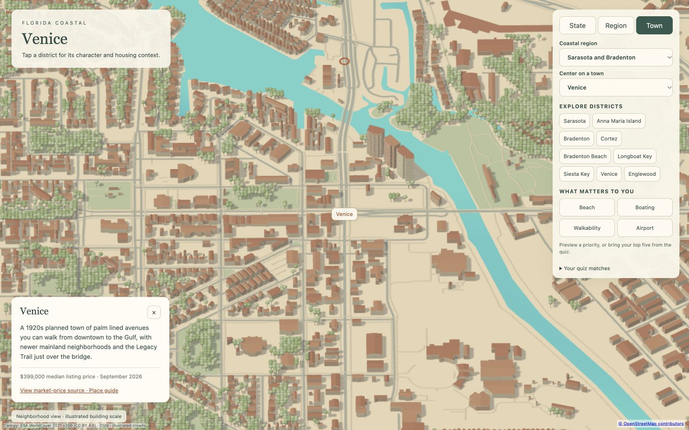
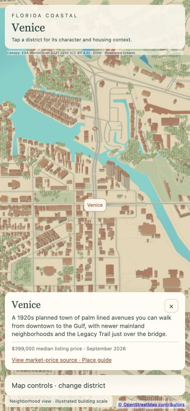
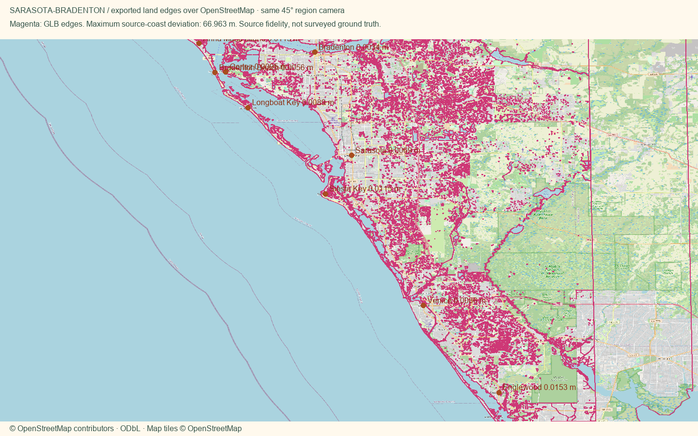

Open atlas · Accuracy CSV · Price sources · Validation
3.17 MB region geometry · 66.96 m maximum coastline-to-source difference · 0.0153 m maximum district-anchor serialization difference.
These are OpenStreetMap source-alignment checks, not a survey. Physical-phone loading time remains unverified.









3.56 MB total initial regional assets. Canopy is loaded in separate spatial tiles. Extent comes from mapped data; the crown positions and live-oak shapes are illustrations, not a surveyed tree inventory.
Canopy audit · Dataset dates and source links · District recipes · Package checks
| District | Canopy source | Source year | Canopy fraction in source window |
|---|---|---|---|
| Sarasota | ESA WorldCover 10 m | 2021 | 30.9% |
| Anna Maria Island | ESA WorldCover 10 m | 2021 | 2.5% |
| Bradenton | ESA WorldCover 10 m | 2021 | 25.3% |
| Cortez | ESA WorldCover 10 m | 2021 | 12.2% |
| Bradenton Beach | ESA WorldCover 10 m | 2021 | 6.8% |
| Longboat Key | ESA WorldCover 10 m | 2021 | 6.9% |
| Siesta Key | ESA WorldCover 10 m | 2021 | 8.6% |
| Venice | ESA WorldCover 10 m | 2021 | 18.2% |
| Englewood | ESA WorldCover 10 m | 2021 | 35.2% |
Percentages describe each source window, which can include water and nearby districts; they are not municipal canopy statistics. ESA WorldCover 10 m 2021 v200: CC BY 4.0, DOI 10.5281/zenodo.7254221. Additional forest extent: OpenStreetMap; Sarasota also uses Florida FWC Cooperative Land Cover.